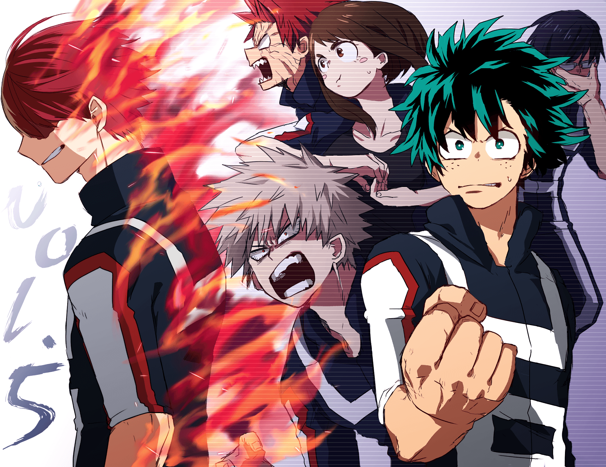

IZUKU MIDORIYA
Quirk: One for All
Cumpleaños: 15 de julio
Alias: Deku
Izuku Midoriya es el protagonista de la serie. Es un joven que nació sin una particularidad (habilidades especiales), un caso raro de 1% de la población. No obstante, luego de un encuentro fortuito con All Might, su héroe favorito y de la infancia, heredó un poder que puede ser entregado y heredado a alguien más, One for All. Esta habilidad incluye súper-fuerza y resistencia al dolor (un gran súper poder). Midoriya es un adolescente de 15 años de edad, tiene pecas, ojos verdes y el cabello alborotado de color verde. Es delgado pero tiene un cuerpo tonificado gracias a su entrenamiento con All Might. Suele llevar una chaqueta negra con botones amarillos junto con un pantalón negro y unos zapatos rojos de gran tamaño. Izuku es una persona muy humanitaria, y nunca dudará en rescatar a alguien en peligro, incluso si él sabe que no es lo suficientemente fuerte para hacerlo. A menudo, él hace esto en un capricho, tomando un acercamiento generalmente más descuidado. Izuku también ha demostrado ser lo suficientemente generoso como para tratar de ayudar a las personas con problemas personales y emocionales, incluso si no le conciernen, alegando que un héroe es alguien que se entromete en las vidas de otras personas. El espíritu heroico de Izuku es reconocido por muchos, habiendo ganado la lealtad y la gratitud de personajes que anteriormente eran antagónicos a él como Tenya Iida, Shoto Todoroki, Kota Izumi, etc.
KATSUKI BAKUGOU
Quirk: Explosión
Cumpleaños: 20 de abril
Alias: Ground Zero
Es un conocido de la infancia de Midoriya, y un abusón engreído desde que eran niños. Bakugou es un personaje que cuenta con la habilidad de transformar su sudor en nitroglicerina y generar explosiones controladas y desmesuradas dependiendo de sus intenciones. Es uno de los personajes con mayor control y conocimiento de su propia habilidad, siendo un verdadero rival para Midoriya. Katsuki es un hombre joven de estatura media, con una constitución delgada y musculosa y un tono de piel claro. Tiene el pelo corto, puntiagudo y rubio ceniza con flequillo entrecortado que cuelga sobre sus cejas. Sus ojos son afilados y de color rojo brillante. Conforme ha avanzado la historia se ve que la personalidad de Katsuki ha cambiado progresivamente, inicialmente partió siendo alguien muy arrogante e intolerante pero poco a poco a ido calmando su actitud hasta el punto de demostrar preocuparse por los demás de manera implícita, como se demuestra en el examen de licencia provisional de héroe cuando reduce sus explosiones para no dañar a Denki y a Eijiro o haber esperado que éste regresara de la batalla contra los Ocho preceptos de la muerte. También ha demostrado tener empatía como es en el caso de Shoto al escuchar a escondidas su pasado.